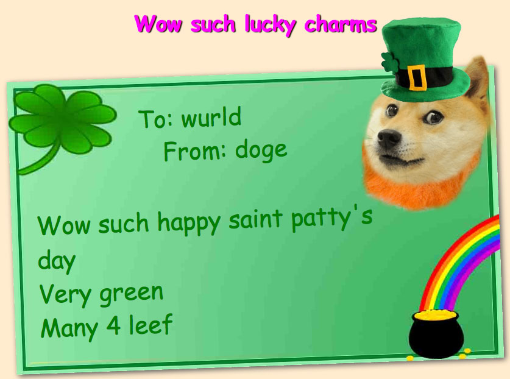
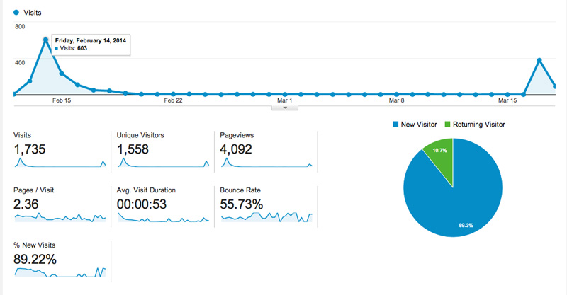

<?php

include '../template.php';

$additional_css = '
    <link rel="stylesheet" href="/blog/doge-card/doge-card.css">
';

print_header('blog', 'Doge Card', $additional_css);

?>

<div id="main">
    <h4>March 18, 2014</h4>
    <h3>Doge Card</h3>
    <hr>

    <div class="article-pic" id="doge-card">
    </div>

    <p>
        I'm not ashamed to admit that I'm a big fan of doge.
    </p>

    <p>
        So, about a month ago, right before Valentine's Day, I created the wonderful site
        <a href="http://doge-card.com/">doge-card.com</a>.
        Doge Card allows shibes across the world to send kind words to their fellow doge with
        "high quality" digital greeting cards.
    </p>

    <a href="/blog/doge-card/card.jpg">
        <div class="pic-wrapper">
            
            <p>Wow, such card. Woof.</p>
        </div>
    </a>

    <p>
        This project was a real joy to work on. It was very fun to deliberately ignore
        good web design principles, and hilarious to use tacky CSS transforms and
        horribly compressed JPEGs.
    </p>

    <p>
        This project also allowed me to get a little more familiar with
        <a href="http://nodejs.org/">Node</a>, and the superb <a href="http://mongoosejs.com/">Mongoose</a>.
    </p>

    <p>
        The most exciting part of this project, however, has been the number of people it has managed to reach!
        Google Analytics reveals that Doge Card has gotten two big spikes in traffic so far: Valentine's Day (603 hits)
        and St. Patrick's Day (378 hits):
    </p>

    <a href="/blog/doge-card/chart.jpg">
        <div class="pic-wrapper">
            
            <p>Fantastic initial results. Wow.</p>
        </div>
    </a>

    <p>
        I will continue making differently themed Doge Cards all this year, at which point the site
        should have a card for every event and holiday. We'll see if it continues to get great traffic!
    </p>

    <p>
        <strong>Update &mdash; April 21, 2014:</strong> This past Easter, Doge Card received 342 hits.
    </p>
</div>

<?php

print_footer();

?>
